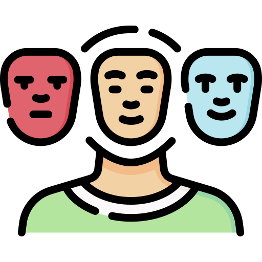
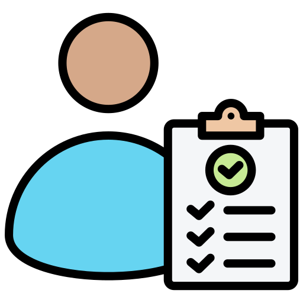
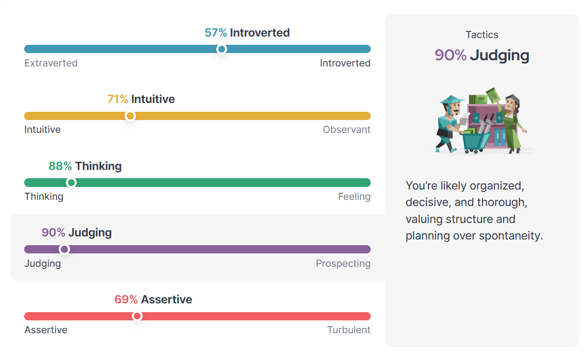

Best Attributes
I’m naturally structured and logical, which helps me stay organized and approach my studies efficiently. I don’t just aim to pass—I focus on improving and doing my best. It also motivates me to collaborate with peers, share knowledge, and work towards achieving my academic goals.
A key emotion that impacts my academic life is determination. When faced with challenges or difficult tasks, I tap into my inner resolve to persevere. This mindset helps me stay on track and overcome obstacles, ensuring my growth and success as a student.

Never be defeated
One of my favorite quotes is "In life you will face many defeats but never let yourself be defeated." by Maya Angelou. I chose this quote because it resonates with me deeply. I didn’t grow up with heroes or role models; instead, I had people I didn’t want to be like. This quote speaks to the idea that regardless of the challenges, environment, or odds, the key is to never give up and always strive for the best. It reminds me that setbacks are part of the journey, but how we respond to them defines our success.

Personality Test
I completed the 16personalities personality test, and here are my results:

After reviewing the results, the test feels mostly accurate. I prefer structure and planning (90% Judging), and I rely on logic over emotions (88% Thinking). The 57% Introverted score makes sense—I’m not completely reserved but still lean that way. While these tests aren’t perfect, they do give a decent idea of how I think and make decisions.